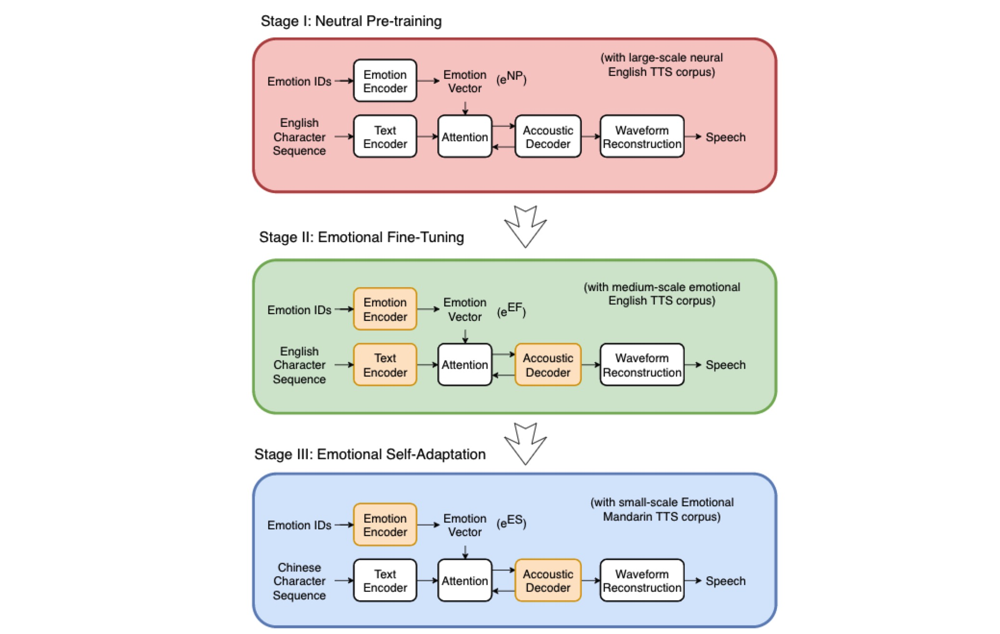

Abstract
Emotional Internet of Things (EmIoT), which provides IoT devices cognitive and socialization capabilities, has been regarded as a future direction to improve users' experiences. With the development of intelligent techniques, the requirement of EmIoT is not only sensing the users’ emotional states, but also providing emotional feedbacks. Human-computer interaction has been studied to achieve speech interaction with IoT devices. The recent advances in neural Text-to-Speech (TTS) have made ``human parity'' synthesized speech possible for IoT-enabled human-computer interaction. Furthermore, emotion control can be achieved by using the emotional codes in a unified model, referred to as emotional TTS (or ETTS for short). Such ETTS models have achieved promising emotional expressiveness using large-scale emotion-annotated English data set, however, they are not practical in IoT environments with other mainstream languages, especially for Chinese. In fact, the limited available large-scale emotion-annotated data set is challenging the development of Chinese ETTS. To address that, we propose a multi-stage deep transfer learning scheme to design a high-quality Chinese ETTS system under a small-scale training corpus to achieve EmIoT in Mandarin environments. In this scheme, the pre-trained knowledge from the former stages corresponding to a large-scale neutral English and a medium-scale emotional English corpora is transferred to a Mandarin ETTS model. Thereby, the trained model can achieve high-quality emotional speech with limited available emotional corpus, which is able to serve various EmIoT-oriented applications. Experiments have been conducted to demonstrate the effectiveness and superiority of the proposed model as compared to other counterparts in terms of naturalness and emotional expressiveness. We refer readers to visit our demo webpage and enjoy the synthesized speech samples.
Fig.1: Block diagram of the proposed multi-stage deep transfer learning system for emotional Mandarin TTS model. Stage-I is the Neutral Pre-training (NP) stage, which trains the basic emotional TTS model using the large-scale English TTS corpus with neutral emotion. In Stage-II, the Emotional Fine-Tuning (EF) fine-tunes the pre-trained emotional TTS model on the basis of the medium-scale English TTS corpus via three emotions (neural, happy and sad). Meanwhile, the parameters of text encoder, emotion encoder and acoustic decoder from Stage-I are transferred to that in Stage-II. The Emotional Self-Adaptation (ES) is in Stage-III, which is in charge of fine-tuning the emotional TTS model exploiting a small-scale emotional Mandarin TTS corpus with three emotions (neutral, happy and sad). Note that the parameters from emotion encoder and acoustic decoder in Stage-II are mapped to Stage-III, respectively. Yellow boxes in stage II and III mean that their parameters are initialized by the pretrained parameters from previous stage, while white boxes refer to that their parameters are initialized randomly.
ETTS: one-stage training scheme
TL-ETTS: two-stage transfer learning scheme
2DTL-ETTS: two-stage cross-lingual transfer learning scheme
3DTL-ETTS: proposed three-stage cross-lingual transfer learning scheme
Speech samples: |
||||
|---|---|---|---|---|
| ETTS | TL-ETTS | 2DTL-ETTS | 3DTL-ETTS | |
| [1] | ||||
| neutral | ||||
| happy | ||||
| sad | ||||
| [2] | ||||
| neutral | ||||
| happy | ||||
| sad | ||||
| [3] | ||||
| neutral | ||||
| happy | ||||
| sad | ||||
| [4] | ||||
| neutral | ||||
| happy | ||||
| sad | ||||
| [5] | ||||
| neutral | ||||
| happy | ||||
| sad | ||||